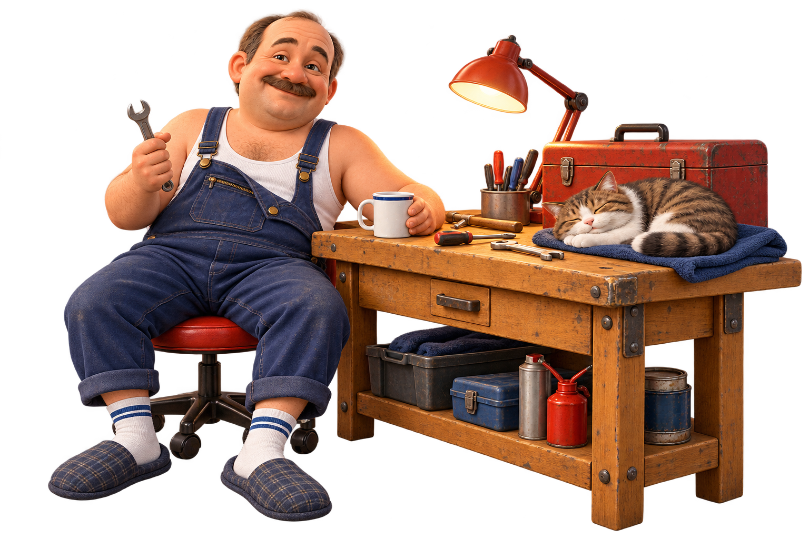

ГЛАВНАЯ РЕЗИДЕНЦИЯ
На диване
Место принятия неспешных решений. Пульт под рукой, чай рядом. Кот обладает правом занять лучшее место.
У каждого времени свои герои.
У нашего — кружка, тапочки и удобное место.
Суета не обнаруженаВ интернет-сленге скуф — ироничный, иногда обидный образ мужчины средних лет, который мало заботится о внешнем виде. У слова есть и более добродушное прочтение — об этом пишет «Грамота.ру» .
В мире Скуфуслуг это добрый герой спокойной жизни: ценит уют, чай и право выбирать свой темп. Здесь можно узнавать себя в шутке, любить свои увлечения и получать удовольствие от простых вещей. Возраст, пол и наличие усов для нашего диванного клуба значения не имеют.
Дальше — наш мемный мир. Все приметы и места обитания описаны с теплом и самоиронией.
Ищите там, где хорошо сидится.
Место принятия неспешных решений. Пульт под рукой, чай рядом. Кот обладает правом занять лучшее место.

Кабинет с нормальными инструментами. «Там дел на пять минут» обозначает свободный формат посещения.
Хороший пар, чай и обстоятельный разговор. Самое время спокойно сказать: «Хорошо сидим».
Рыбалка, дача и мангал — сезонные филиалы комфорта. Рыба может не клевать, зато повод провести время с друзьями уже оформлен.
Совпадения согревают душу.
Отдельная единица отдыха. В минуты не переводится, по будильнику не измеряется.
Провода, зарядки и тот самый болтик. Вещи ждут своего часа — и однажды действительно выручают.
Вмещает глоток чая, завершение матча и короткий взгляд в окно. У хорошего ответа свой темп.
Любимые тапочки и кружка уже прошли испытание жизнью. Комфорт — весомый аргумент.
Палыч рекомендует начинать
с простого: «Чай будешь?»
Кружка в руках и спокойный разговор помогают устроиться поудобнее.
«Помоги повесить полку в субботу» понятнее, чем загадочное «надо кое-что сделать».
Гараж, рыбалка, игры или грядки — у каждого своё место силы. Можно просто поинтересоваться.
Лучший мем тот, который радует обоих. Если человеку прозвище неприятно, обращайтесь по имени.
Проверьте свой уровень скуфства или найдите услугу по душе.